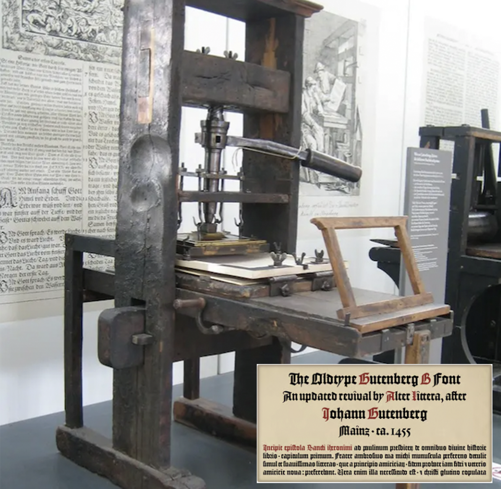

Typography: A Journey Through Its History and Importance.
Typography is an essential element of design and communication, shaping the way we read and interpret text. From ancient inscriptions to digital screens, typography has evolved significantly, influencing art, literature, advertising, and branding. This article explores the history of typography, its development, and its impact on the modern world.
The Origins: Ancient Scripts and Lettering
The earliest form of typography can be traced back to ancient civilizations. Egyptians used hieroglyphs, while the Mesopotamians developed cuneiform writing. The Phoenicians (1200 BCE) created the first alphabet, which influenced Greek and Latin scripts. These early letterforms were manually inscribed on stone, wood, or papyrus.
The Medieval Manuscripts (5th - 15th Century).
The Romans played a crucial role in typography by refining letterforms into what we now recognize as serif fonts. Roman inscriptions, such as those found on Trajan’s Column (113 CE), featured capital letters with small strokes (serifs) at the ends, improving readability. This classical Roman style remains influential today.
Trajan's Column.
The Printing Revolution: Gutenberg’s Movable Type (15th Century).
In 1440, Johannes Gutenberg revolutionized typography by inventing the movable-type printing press. His first major printed work, the Gutenberg Bible (1455), used a Blackletter typeface. This innovation made books more accessible, leading to increased literacy and the spread of knowledge across Europe. The typeface used in Johannes Gutenberg's Bible was Textura, a style of blackletter. Blackletter is a typeface with strong vertical strokes and a boxy appearance. It's also known as Gothic or Fraktur.
Gutenberg's Printing Press and his Blackletter Typeface.
The Renaissance and the Birth of Modern Typefaces (15th - 18th Century).
The Renaissance saw a shift from Gothic scripts to more legible, humanist typefaces. In 1470, Nicholas Jenson designed one of the first Roman typefaces, which became the foundation for modern serif fonts. Later, Claude Garamond refined this style, and his typefaces are still widely used today. During this period, italic fonts were introduced by Aldus Manutius to save space in printed books. Typography became more refined, leading to the creation of the Old Style, Transitional, and Neoclassical typefaces.
The Industrial Age and Mass Printing (19th Century).
The Industrial Revolution brought advancements in printing technology and the rise of new typefaces. This period saw the creation of bold, decorative, and slab-serif fonts for advertising and posters. Innovations in mechanical typesetting allowed for faster production of books, newspapers, and magazines.
19th Century's Slab-Serif Type by Louis Fili & Steven Heller (as an example).
The Modernist Movement and Sans-Serif Typefaces (20th Century).
In the early 20th century, the Bauhaus movement embraced clean, geometric sans-serif fonts like Futura (1927). Designers like Jan Tschichold promoted functional and minimalistic typography. The mid-century saw the rise of iconic fonts such as Helvetica (1957) and Univers (1954), which became popular for branding and corporate identity.
The Digital Age and Web Typography (21st Century).
With the rise of computers and the internet, typography expanded into the digital world. The introduction of TrueType (1989) and OpenType (1996) allowed fonts to be scalable and adaptable across various devices. Web designers use responsive typography to enhance readability on screens. Today, thousands of fonts are available, from classic typefaces to innovative variable fonts that adjust dynamically.
The Right Use of Typography in Modern Websites.
Typography plays a crucial role in web design, influencing readability, user experience, and brand identity. Choosing the right typefaces, sizes, spacing, and colors ensures that a website is both visually appealing and functionally effective. In today’s digital landscape, designers must consider accessibility, responsiveness, and user engagement when implementing typography.
Here is an example of a modern website that is visually attractive and well designed:
Visit and take a look at:
El ZanjonEl Zanjon offers visitors an immersive glimpse into Buenos Aires' rich history, effectively blending visual design with informative content. Here's an analysis of its typography and overall design:
Typography Review:
- Font Selection: The website utilizes clean, sans-serif fonts that enhance readability across various devices. This choice aligns with modern web design standards, ensuring text is legible and accessible.
- Hierarchy: Headings are distinctly styled, guiding users through the content seamlessly. The use of different font weights and sizes establishes a clear visual hierarchy, making it easy for visitors to navigate and absorb information.
- Consistency: A consistent typographic style is maintained throughout the site, contributing to a cohesive and professional appearance. This uniformity aids in user comprehension and enhances the overall aesthetic.
Here is a website with a poor design and a bad selection of typography:
Visit and take a look at:
Yale School of ArtThe Yale School of Art website is an unconventional and polarizing example of web design. It defies traditional usability and aesthetic norms, which can be either an intentional artistic statement or a frustrating experience for visitors.
Typography Review:
- Inconsistent Font Choices: The site lacks a cohesive typographic structure, with multiple fonts used haphazardly. This inconsistency makes it difficult to establish a clear identity or visual rhythm.
- Erratic Text Sizing & Spacing: There’s no clear hierarchy in font sizes, and some text appears crammed together while other parts are excessively spaced out. This disrupts readability and makes navigation confusing.
- Poor Readability: The contrast between text and background is inconsistent, with some text difficult to read due to low contrast or strange placement. This is problematic for accessibility and overall user experience.
The website feels cluttered and disorganized, making it difficult to locate key information. While this may reflect an avant-garde artistic approach, it compromises usability. Various elements (colors, images, text) appear randomly placed, lacking alignment or clear structure. This results in a confusing and overwhelming browsing experience. Users may struggle to find information quickly, as the menu lacks clear categorization. Important links don’t stand out, making it frustrating to browse. While Yale’s art program embraces experimental design, the website feels more like an early 2000s internet experiment rather than a modern, well-structured art institution site.
Conclusion
Typography has a rich history that continues to evolve with technology and design trends. From ancient inscriptions to digital screens, it remains a powerful tool in communication, design, and branding. Understanding typography helps designers and writers create visually compelling content that enhances readability and engagement.
See Article about Colors